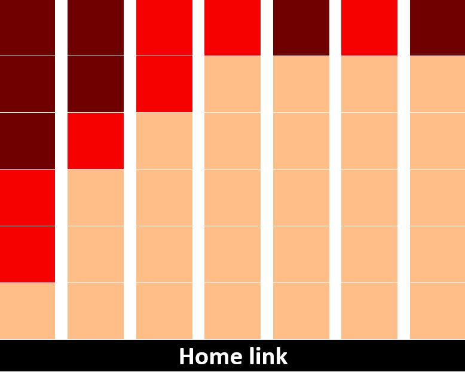
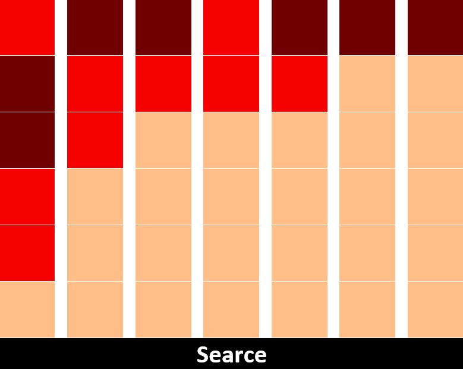
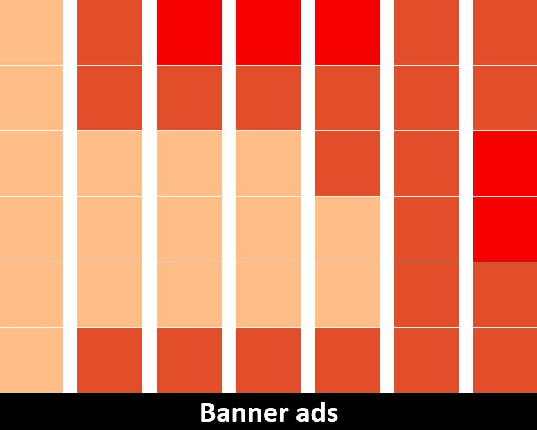
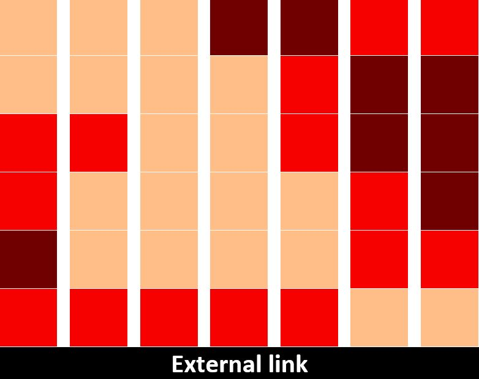
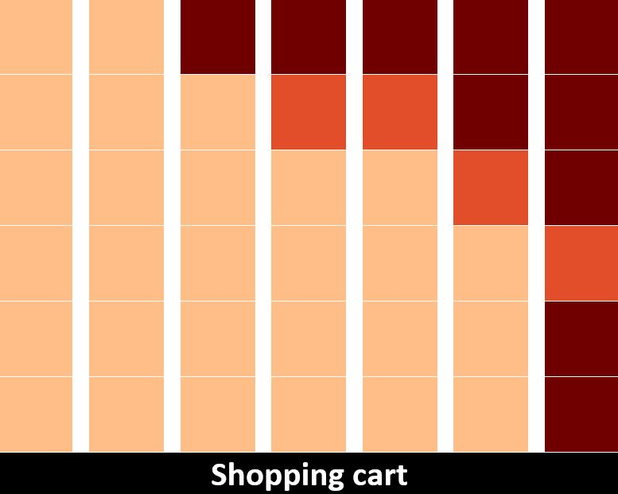
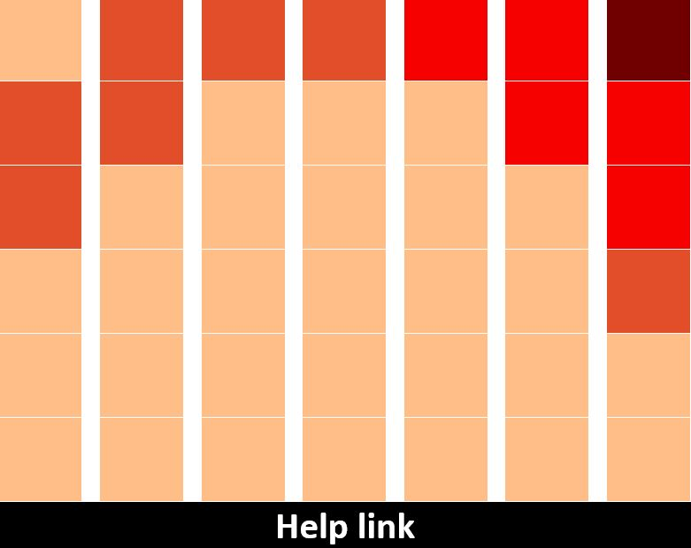
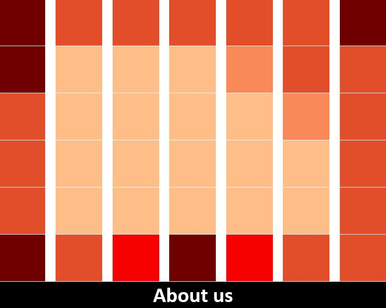
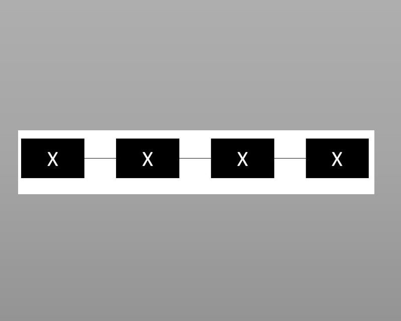
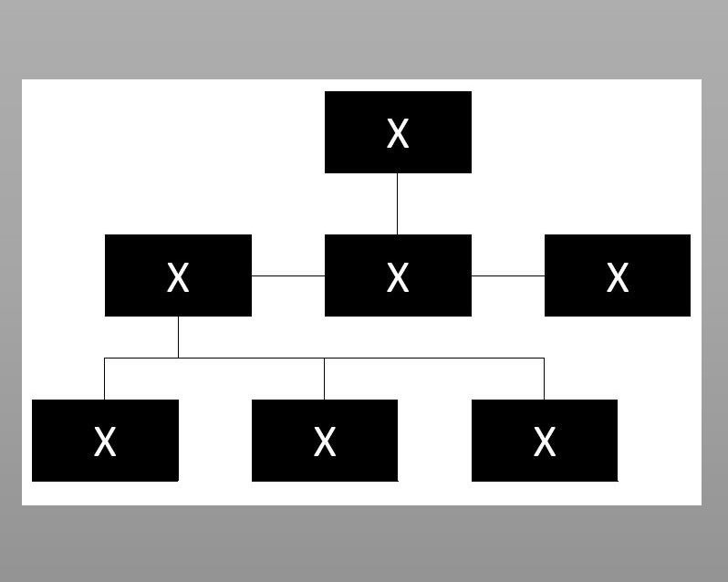
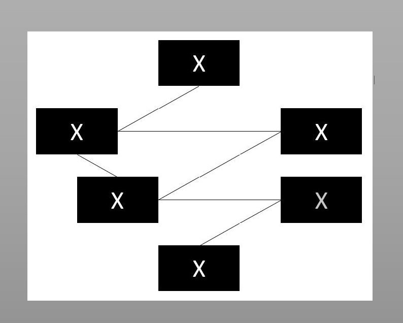

Før man begynder selve udviklingen af et website så er man nødt til at tage nogle forholdsregler samt at lave en del undersøgelser og test, så man ikke ender med stå med et produkt, som står til flere ændringer end tid er værd.
En af de mere grundlæggende måder at organisere data på er;
Kategori - Hvilke de forskellige e- dette kan f.eks. produkter eller serviceydelser.
Tid - Organisering af tidslinjer,historiske emner.
Lokation
Alfabetisk - Her kan der være navn, ordbøger med vidre.
Kontinuum - Organisering efter værdier.
(Interfacedesign - fra ide til prototype (side. 166-167))
Brainstorm
Brainstorm er en metode til idegenerering som anset for at være en af de mest effektive metoder for at skabe nye og kreative ideér.
Ved at strukturer ideerne ud fra en overordnet overskrift, kan man enten som individ eller som gruppe finde en fremgangsmetode som stiller de bedste resultater for problemstillingen.
En af de bedste fremgangsmetoder for udførelsen af en brainstorm, sker ved brug af et større stykke papir (hvis man er traditionel). I midten indsættes problemstillingen og derfra kan man komme med inputs og ideer til den vidre udvikling.
Man kan udføre en idegenerering på forskellige måder, heraf kan man også bruge "Mindmap", en process som i høj grad minder om brainstorming men til forskel - bedre udføres i starten af udviklingen.
Kortsortering er en fysisk proces hvor man finder frem til fremgangsmetoden ved at skrive indholdskatogorier ned på kort for derefter at arrangere dem i rækkefølger som virker logiske for de enkelte personer.
Der finde 2 former for kortsortering;
Et kort af gangen - her får deltageren et kort af gangen som de så opdeler i deres egen grupper, for til sidst at navngive dem.
Her er grupperne allerede lagt, men i stedet skal deltagerne lægge et kort af gangen under de forskellige kategorier.
Til sidst skabes et overblik. baseret på processen, deltagernes udfordringer og overvejelse - som derfra kan bruges til forbedringer eller ændringer.
(Kommunikation i multimediedesign (side. 168))







Virsualiseringen af arkitekturen
Når man gør noget virsuelt, handler det om at gøre det synligt så andre også kan tage del i objektet.
Opstilling på et website kaldes også arkitetekturen og er bygget op af mange forskellige enheder, der alle har til formål at samle alt til en helhed, så undervejs i en udviklingsproces kan det være en fordel at supplere med "wireframes" igennem processen.
Wireframes er metode til at virsualisere indholdet på et website. Denne process gøre det nemmere at få et overblik over de grafiske placeringer og det generelle udseende som i høj grad besider hjemmesider i dag kontra webbets tidligere historie.
Fordele med wireframes;
Opdatere sig på brugerens forventninger til siden.
Navigationsstruktur omhandler den måde indholdet opsættes for at sikre en nem og effektiv tilgang på websites. Dette giver blandt andet brugeren mulighed for at hoppe imellem links uden at fare vild i mængden af sider.
Når man taler om strukturen i navigation kan man inddrage henholdsvis sitemaps som er beskrevet længere nede uder "kortlægning" samt "flowcharts";
(Interfacedesign - fra ide til prototype (side. 217))
Et diagram som trin for trin viser hvordan brugeren er kommet frem til forskellige resultater via de trin der er taget, vejene som han eller hun er gået samt de beslutninger som de har taget.
(Interfacedesign - fra ide til prototype (side. 93))
×Site-ID´et eller logoet er indgangen til siden og bør stå øverst og helst i venstre hjørne.Desuden skal brand/logo overholde reglerne om design samt skal alle sider have et ID, da indgangsmulighederne til et website er mange.
(Kommunikation i multimediedesign (side. 177))
×Er den overstående navigation
(Kommunikation i multimediedesign (side. 177))
×Utilities er objekter med vigtighed som f.eks. "hjælp", "indkøbskurv" mv.Disse er ikke en del af den primære navigation og deres plads kan derfor variere.
(Kommunikation i multimediedesign (side. 177))
×En direkte metode til at søge information på
(Kommunikation i multimediedesign (side. 177))
×Wayfinder handler om den måde vi kommer rundt om de forskellige obejekter og muligheder som findes på websites.Disse opsætninger bygger på hvordan hjemmesidens design er opsat, så brugeren nemt kan komme igennem tingene uden at skulle søge sig frem til resultaterne.
(Interfacedesign - fra ide til prototype (side. 221))
×Intuition består i at man handler uden at tænke over sine handlinger. Når man taler om website betyder dette at brugeren kommer rundt og trykker på objekter uden at bruge tid på at tænke over det.Vær opmærksom på at intuition ikke ligger i blodet og brugeren skal derfor igennem et par gange først.
(Interfacedesign - fra ide til prototype (side. 222))
×Put labels på alt - Brugeren navigere igennem tydelige objekter som fortæller hvad han eller hun kan forvente ved at trykke på det givende område.
(Interfacedesign - fra ide til prototype (side. 222-223))
×Det kan være så nemt bare at lukke fanen eller starte forfra, men for andre kan det være lige så svært at komme ud som det var at komme ind.Derfor er det vigtig at man indlægger spor eller objekter som kortlægger brugeren position - dette kan være igennem fremhævet menuer, url-adressen eller globel navigationsmuligheder.
(Interfacedesign - fra ide til prototype (side. 223))
×Call-to-acion er en eftertragtet annonceringsmulighed, da siden igennem fremhævet tekst, design og farver trækker brugeren hen i en ønsket retning. Teksten er indbydendeCentral placeret med afstand til andre elementerFarver i kontrastStørrelseforholdIngen andre knapper i interface
(Interfacedesign - fra ide til prototype (side. 229-230))

Linear (Interfacedesign - fra ide til prototype (side. 218))

Hierakisk (Interfacedesign - fra ide til prototype (side. 218))

Kontekst (Interfacedesign - fra ide til prototype (side. 220))